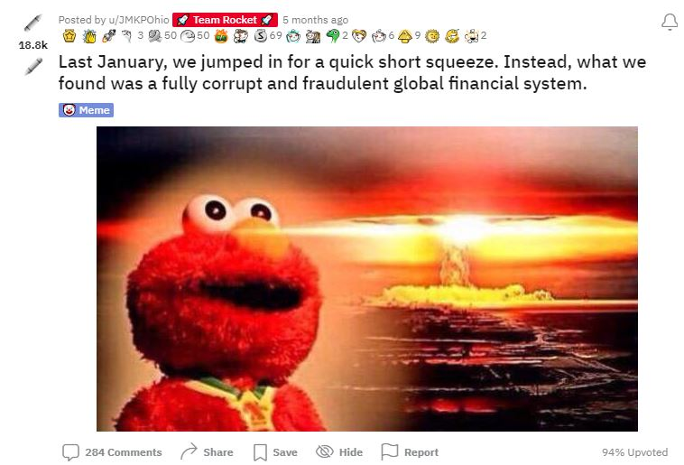

Steven
I joined the Code-Youth program because I heard many good things about it from a friend of mine who took the course prior to the one we are currently attending. Coding has always been an interest to me and I have always been intreged in how programs work and how video games function. In todays world, coding is an intregal part of our society. From communications to Trade, to your daily entertainment and needs to the basic everyday functions of a company. Coding isthe fundemental backbone of our technology drivin society, interwoven with almost every aspect of our life.
Some of the skills I hope to learn from this class is
Many of my interest vary from a wide variety of subjects and skills.
Although I have a wide variety of interests, recently I have focused the majority of my attention on a very special moment in history. Learning about something the vast majority of the public has been shut out from understanding. purposefully
Legal Disclaimer: This is not financial advice, I am not a financial advisor. everything is subject to my personal opinion and the opinions of many others.
Everyone has heard about Sears, Toys R Us, and Block Buster just to name a few. We all know how they went out of business because the company went bankrupt. I mean, thats what we were told, right? What if I told you that the real reason hundreds of companies within the past 2 decades went bankrupt was because of a more nefarious, and quite frankly evil ponzi scheme? All of the employees from these companies losing their retirement funds, and their lively hood. You probably would want an explenation? you would demand justice.
The truth of the matter is actually extremely complex, and would require vigorous self performed research. That is why the system was built the way it is to begin with. To be overly complex for the average individual to understand. The reason why you should care is because this doesnt just effect people who invest. It effects anyone who has a savings account, who has a job, who has goverment funding, who buys food or gas. The world wide financial system is on the brink of collapse because of the greed of a few, and the public will foot the bill as it always has. The only issue this time is it will be on the scale of the Great Depression.
Because of the knowledge I have gained from independant researchers to Industry professionals, it has drastically changed my outlook on life and where I will be in the coming year. It has not only been the best savings account I have ever started, but it has set me up for financial freedom once the market crashes. From the knowledge that I have learned about the financial markets, to the crime I have witnessed being commited by the mainstream media, political figures, and owners of billion dollar hedge funds, I can safely assume that within the coming months to next year, we will expeience a collapse of the entire world financial markets. Many will be harmed worse than in 2008 and, (believed by many independant researcher) worse than the great depression. The only way to safely pass through the coming economic disatster is to hedge against it. If only there was a stock that had that potential....
Within the past year and a half I became infatuated with researching and investigating Gamestop. But most importantly its new Chairman Ryan Cohen, and his massive transformation of Gamestop from a brick and mortar store to a Fintech company, and its breakthrough into the decentralized crypto market place and crypto wallet. But most importantly the fact that Gamestop, the company, has been massively Naked Shorted by large instituational hedge funds who have overleveraged themselves to a point of no return. What is Naked shorting? In summary, it is the illegal practice of borrowing shares owned by individuals or institutions, with the promise to pay it back in the future, just to have that same share lended out multiple times in a row. This creates a brand new share out of thin air, able to be sold on the market-place to effect the price of a stock.
For a more thorough and indept explenation, Click here
So wait a second. These large institutions can create shares out of thin air when ever they want, and sell them on the open market to effect the price of stocks? And after they make billion dollar bets on a company going bankrupt, they use those same shares to bring the price of their stock to 0? And after the company goes bankrupt the large institution doesn't have to pay taxes on their billions of dollar gains? Well, yes. And it gets WAY WORSE than what I have described
This type of activity is some of the morst egregious and disgusting inhumane acts I have ever witnessed. I have always heard how the stock market is "manipulated" and the rich always win because they are "smart money". But this is just beyond having more resources than others. The very ALGORITHM is designed to work for THEM and AGAINST the public i.e YOU.
How do you even win against something like this? the government has proven their inability to stop this, and it almost seems like they are in bed with these very institutions. (And if you keep on reading through the research you will find out that they are in fact, in bed with each other)
We as the public were never suppose to find out about this. It was intended to stay complex and hidden through various forms of propaganda and deciet from brokers through out decades. However, there was one fatal flaw in their plan. They did not expect that in July 2020 a crack in their system where the truth shined into the public eye for just long enough for a specific kitty and his degenrate fans which saw what he saw. the short interest of Gamestop over 100%? How can something be OVER 100%? Can you own your car 120%? can your own a house 180%? can you watch a movie more than 100% of its run time? Something is going on here...
And just like that, Keith Gill analyzed the data, and came to the conclusion that Gamestop had the potential for a short squeeze. What happened next was arguable the greatest moment in retail history.
The price of Gamestop shot up from single digit numbers to $325 during open hours, and touched $500+ after. Then the most disgusting thing occured. Robinhood, a brokerage app used to buy stocks, shut off the buy button on Gamestop. That meant that retail investors were only able to SELL but not buy. They manipulated the open and free market right infront of our eyes and the price dropped down from $325 to $40 in 2 days. It looks like we lost, or as the main streem media says "we won, take you win and leave". It looks like Wall street had won, if it wasn't for the fact they they picked a fight with the wrong investors. They would have never thought an outlier was about to form in the phsycology of retail investors. We didn't leave. We kept buying Gamestop. And as a result we have been fighting a battle against Wall street and the Federal Reserve/Government since January 2021.
This all sounds a little crazy, and some may even say a conspiracy. But this is far beyond a conspiracy at this point. it is just hard facts.
"Please don't talk about this"
No, none of this is a joke. The term "meme stock" is a derogatory term concocted by a group of financial terroists who have had their hands in our pockets for far too long. The term "meme stock" beyond being illegal in itself, has no real meaning. Very hard times are coming in the near future and there is truly only one way to financially secure yourself. That is of course, if you are willing to give the independant reseachers and the Industry professionals who have peer reviewed and verified what we have been saying for 1 and a half years. then you may just have made one of the best decisions of your life, when their risk is quite literally infinity
These are just the few BIG NAME professionals who have spoken with the people of superstonk and have confirmed our "biases" and facts.
Superstonk has no affiliation to wallstreetbets.